Advisory Board Internacional
¿Cómo alineamos a 12 KOLs internacionales en una sola sesión?
Un laboratorio multinacional necesitaba consenso clínico entre especialistas de 5 países con perspectivas muy divergentes...
Leer caso →El primer instituto de investigación de mercado dedicado exclusivamente al sector farmacéutico. Cuatro décadas de rigor, método y profesionalidad en investigación de mercado cualitativa, cuantitativa, advisory boards y reuniones estratégicas.
Fuimos la primera empresa española de investigación de mercados dedicada exclusivamente al sector farmacéutico. Cuatro décadas de trabajo continuo, un equipo sólido y una metodología probada nos avalan.
Nuestra especialización en healthcare no es una elección comercial – es nuestra razón de ser.
A lo largo de cuatro décadas hemos adquirido experiencia en más de 200 enfermedades destacando una gran dedicación a las enfermedades raras.
Somos Nuin y esta es nuestra forma de ver las cosas:
"El precio de la luz es menor que el costo de la oscuridad."
Estamos convencidos de que las decisiones basadas en la empatía siempre serán mejores. Por eso convertimos los conocimientos, comportamientos y sentimientos de las personas en información útil y utilizable para facilitar a nuestros clientes la toma de mejores decisiones.
"A la excelencia hay que ir y golpearle la puerta, es un trabajo de todos los días."
Estamos convencidos de que la excelencia es la única aspiración válida. Por eso ponemos toda nuestra alma, profesionalidad y entrega en cada proyecto, porque creemos firmemente que no hay proyecto o cliente ni grande ni pequeño.
"El talento gana partidos, pero el trabajo en equipo y la inteligencia ganan campeonatos."
Estamos convencidos de que toda persona tiene un don. Por eso tenemos un equipo de personas diferentes, que se actualizan continuamente en tendencias, metodologías y recursos.
"Yo no sé hacer lo que tú haces y tú no sabes hacer lo que yo hago, pero juntos podemos hacer grandes cosas."
Estamos convencidos de que la confianza y el respeto profesional son los pilares. Por eso nos relacionamos desde la flexibilidad, la humildad, la cercanía y la profesionalidad.
"Elige un trabajo que te guste y no tendrás que trabajar ni un solo día de tu vida."
Estamos convencidos de que la felicidad de las personas tiene que ser una prioridad. Por eso ofrecemos a nuestros empleados un espacio donde pueden desarrollarse día a día.
"La visión sin acción es un sueño, la acción sin visión es pasar el rato, pero la acción con visión significa generar un cambio positivo."
Estamos convencidos de que si todos enfocásemos nuestra vida desde la empatía el mundo sería un lugar mejor. Por eso abordamos cada proyecto y cada nuevo reto desde el análisis de los distintos puntos de vista.
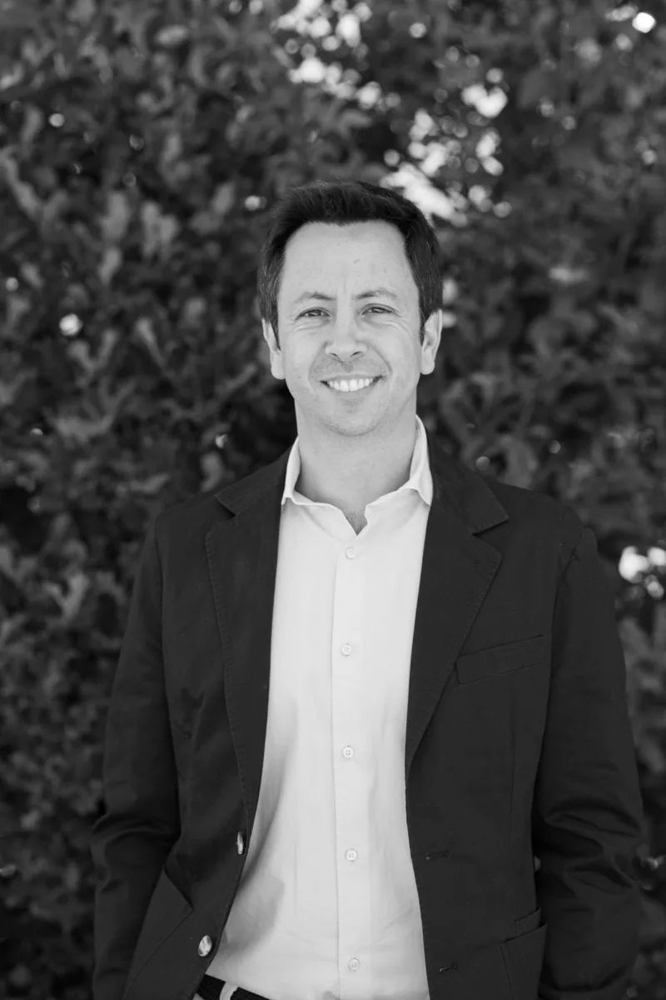
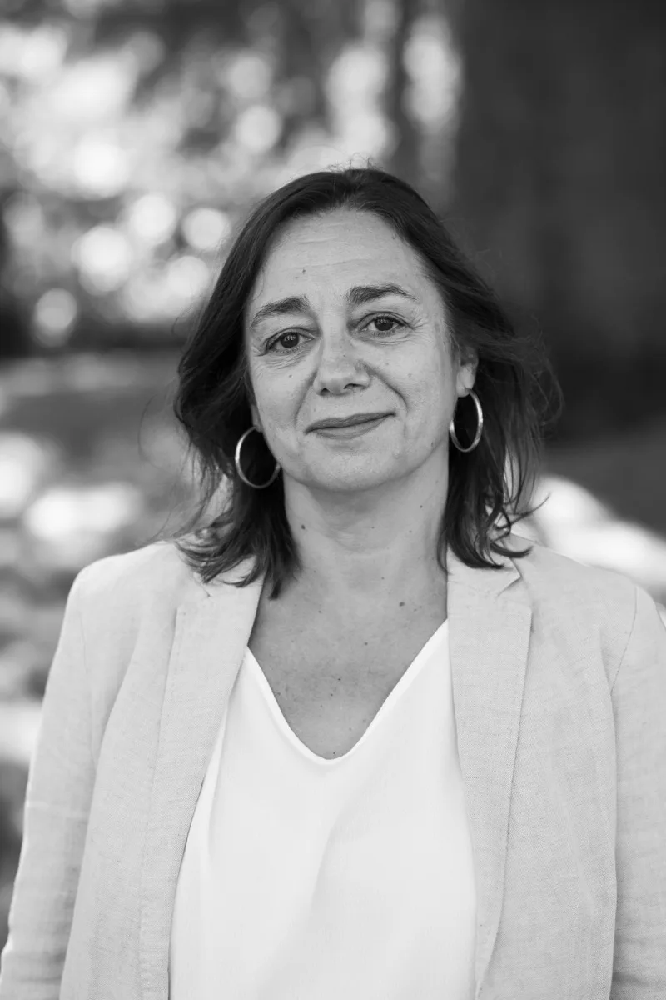
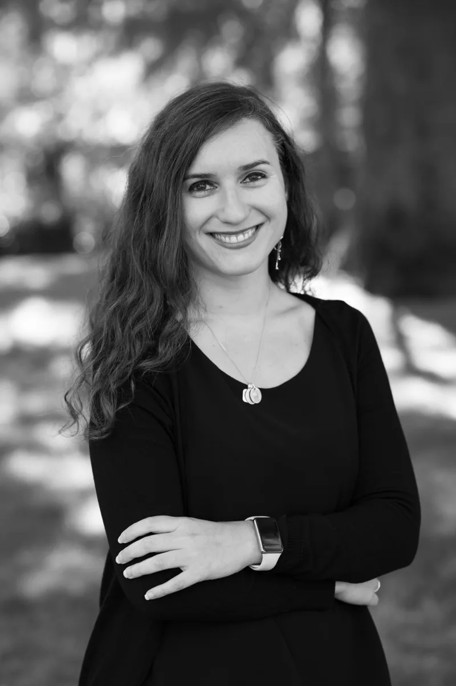
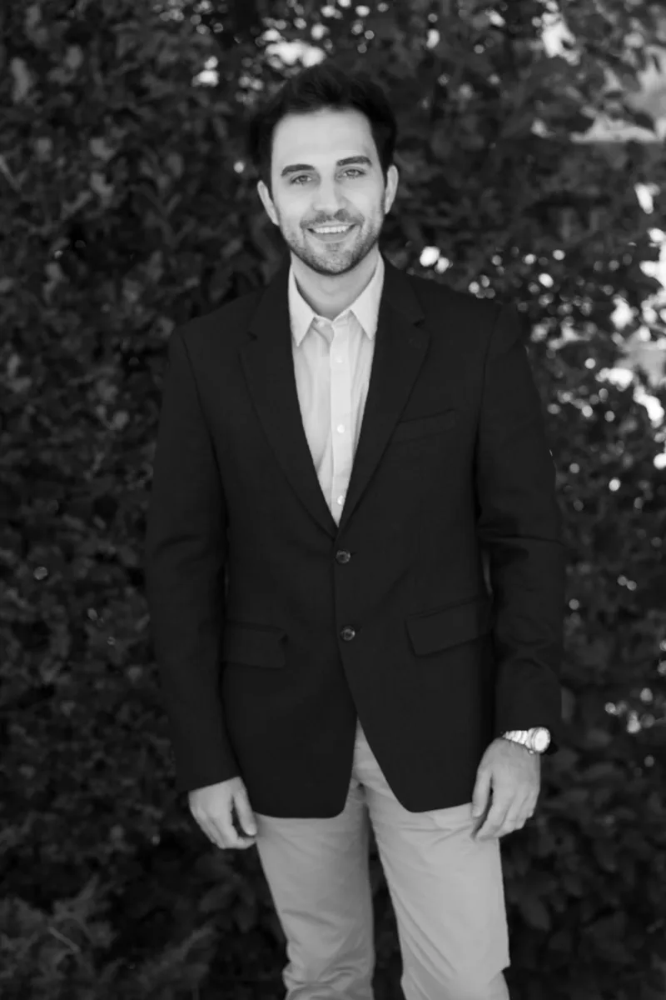
Cuarenta años dedicados a un solo sector nos han permitido dominar cada ángulo de la investigación en healthcare.
Selecciona un servicio para ver los detalles.
Más de 750 sesiones realizadas en todo el mundo. Diseñamos cada reunión a medida, asegurando la máxima participación y resultados estratégicos para cada laboratorio.

40 años convirtiendo preguntas complejas en decisiones claras.
La investigación es el núcleo de Nuin. Cuatro décadas trabajando exclusivamente en salud nos han permitido desarrollar un conocimiento profundo del entorno clínico, los profesionales sanitarios y los pacientes.
Combinamos investigación cualitativa y cuantitativa con metodología propia, base de datos exclusiva y amplia experiencia por áreas terapéuticas para generar insights sólidos, accionables y relevantes. No solo obtenemos respuestas: entendemos el contexto que las explica.
En Nuin acompañamos a nuestros clientes en momentos clave de análisis, alineación y toma de decisiones. Diseñamos y facilitamos dinámicas estratégicas adaptadas al entorno healthcare, combinando conocimiento del sector, visión analítica y experiencia moderando equipos multidisciplinares.
Ayudamos a transformar información y experiencia en decisiones compartidas, accionables y orientadas a resultados.
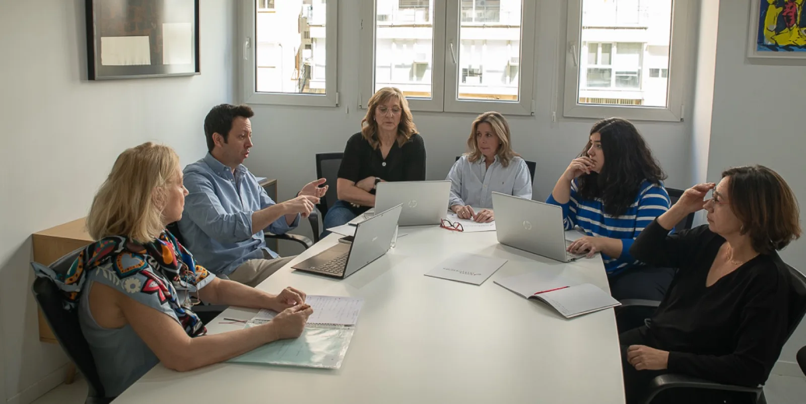
Dejamos que nuestras salas hablen por nosotros. Desde la Sala — la única en España diseñada específicamente para Advisory Boards — hasta la Sala FOCUS, pensada hasta el más mínimo detalle.

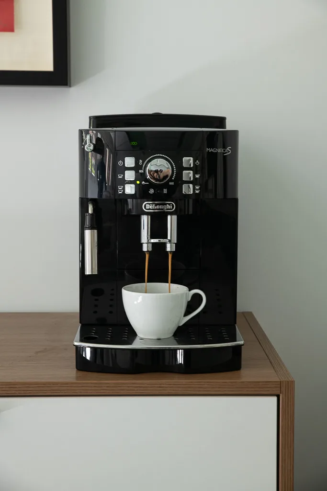
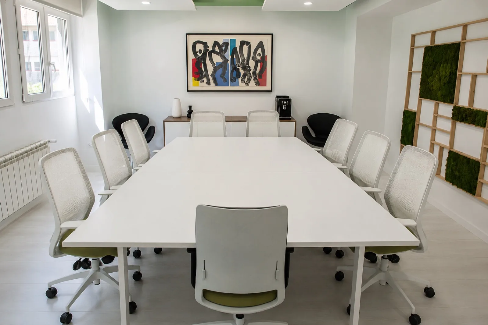
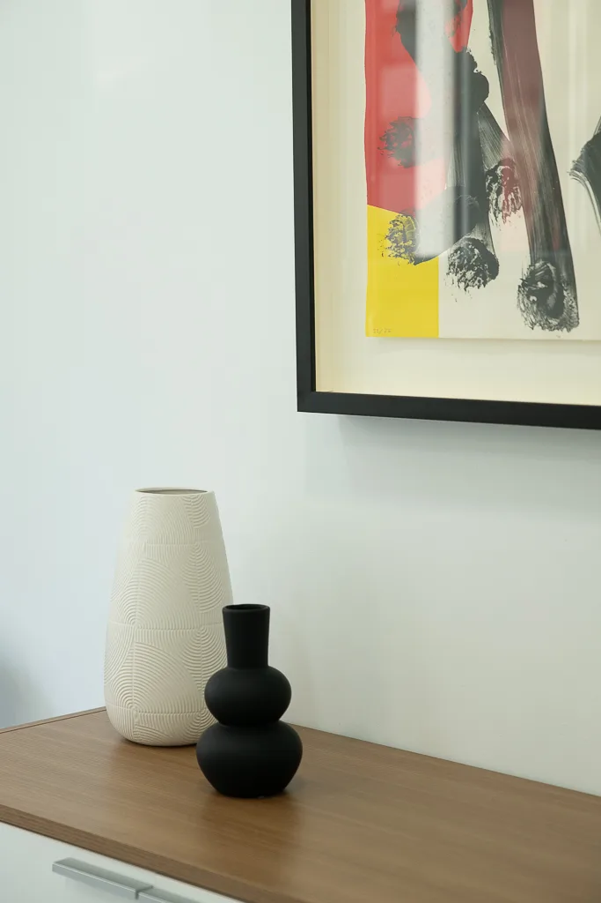


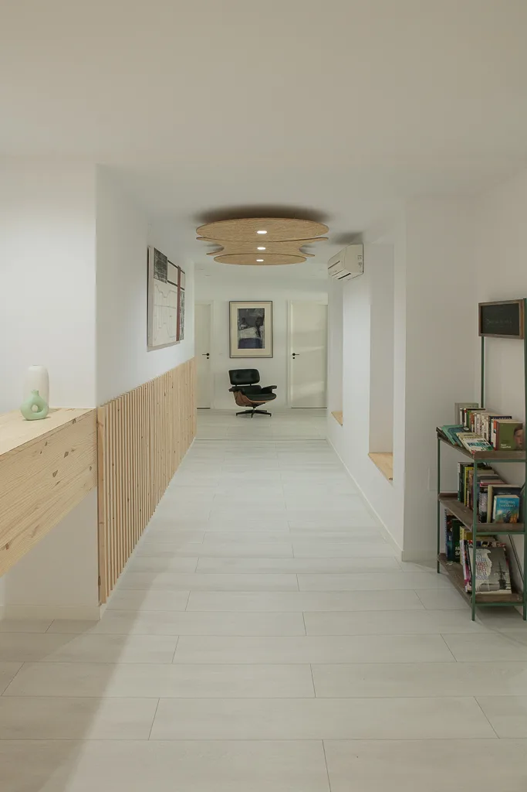
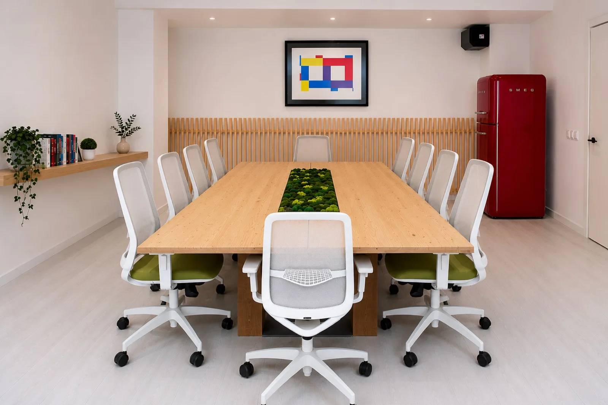
Una de las cosas más difíciles de ser especialistas en farma es mostrar lo que puedes hacer por tus clientes sin desvelar información confidencial… así que os hemos preparado este blog que habla de casos reales en los que pudimos ayudar.
Un laboratorio multinacional necesitaba consenso clínico entre especialistas de 5 países con perspectivas muy divergentes...
Leer caso →
Un cliente con buenos resultados en encuestas pero producto sin prescripción. Exploramos el gap entre actitud y comportamiento...
Leer caso →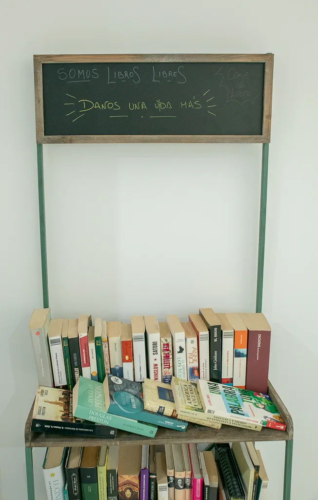
Un laboratorio necesitaba reformular su modelo de visita médica sin perder productividad. Aplicamos TWACE en 6 semanas...
Leer caso →En Nuin sabemos lo importante que es crecer de la mano de otras agencias y organizaciones, compartiendo buenas prácticas y colaborando para elevar los estándares de calidad del sector.
"Llevamos más de cuarenta años aprendiendo día a día para que tu próximo proyecto salga perfecto, ¿hablamos?"